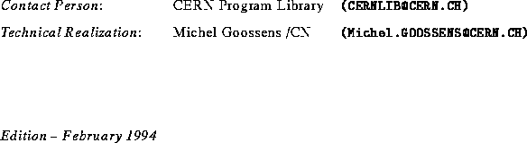

Next: Preliminary remarks
file=cern15.eps,height=30mm
CERN Program Library Long Writeups I302
Format Free Input Processing
Version 3.13
Application Software and Databases Group
Computing and Networks Division
CERN Geneva, Switzerland
H1Preface
H2Copyright
Trademark notice: All trademarks appearing in this guide are acknowledged as such.

H2Prelimininary-remarks
Michel Goossens
Thu Aug 3 09:16:50 METDST 1995